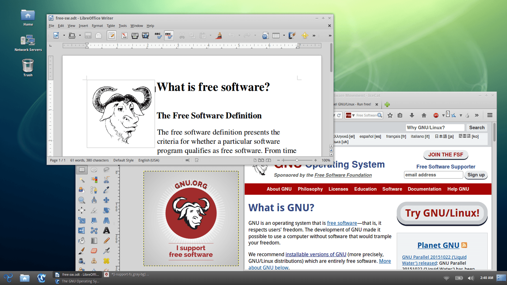

Schermafdruk van de Trisquel GNU/Linux-distributie waarop Gnome wordt uitgevoerd, een vrije GNU-bureaubladomgeving; alsmede LibreOffice, een vrij kantoorprogramma; GIMP, een vrij GNU-beeldbewerkingsprogramma; en IceCat, een vrije GNU-webbrowser gebaseerd op Mozilla Firefox.